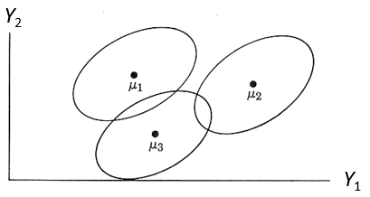
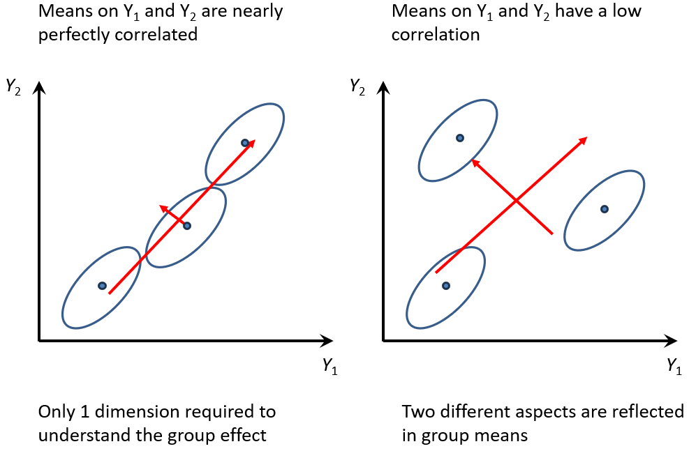

Anova -> MANOVA
Belongs in mlm-review.qmd
And what is \(\boldsymbol{\Large\varepsilon}\) ??
Assumptions
The assumptions of the multivariate linear model entirely concern the behavior of the errors: Let \(\mathbf{u}_{i}^{\prime}\) represent the \(i\)th row of \(\mathbf{U}\). Then it is assumed that
- \(\mathbf{u}_{i}^{\prime}\) is distributed as multivariate normal, \(\mathcal{N}_{p}(\mathbf{0},\boldsymbol{\Sigma})\), where \(\mathbf{\Sigma}\) is a non-singular error-covariance matrix;
- \(\mathbf{\Sigma}\) constant across all observations and grouping factors;
- \(\mathbf{u}_{i}^{\prime}\) and \(\mathbf{u}_{j}^{\prime}\) are independent for \(i\neq j\); and \(\mathbf{X}\) is fixed or independent of \(\mathbf{U}\).
These statements are simply the multivariate analogs of the assumptions of normality, constant variance and independence of the errors in univariate models.
Hypothesis tests
In univariate response models, statistical hypothesis tests and model summaries (like \(R^2\)) are based on the familiar decomposition of the total sum of squares \(SS_T\) into regression or hypothesis (\(SS_H\)) and error (\(SS_E\)) sums of squares. In the multivariate linear model a similar decomposition is applied to the total sum of squares and cross products (\(SSP\)}) matrix into regression and residual SSP matrices. For the MLM this is expressed as, \[ \begin{align*} \underset{(p\times p)}{\mathbf{SSP}_{T}} & = \mathbf{Y}^{\prime} \mathbf{Y}-n\overline{\mathbf{y}}\,\overline{\mathbf{y}}^{\prime} = \left( \widehat {\mathbf{Y}}^{\prime}\widehat{\mathbf{Y}}-n\overline{\mathbf{y}}\,\overline{\mathbf{y}}^{\prime}\right) + \widehat{\mathbf{U}}^{\prime}\widehat{\mathbf{U}} \\ & = \mathbf{SSP}_{H}+\mathbf{SSP}_{E} \equiv \mathbf{H} + \mathbf{E} \comma \end{align*} \]
where \(\overline{\mathbf{y}}\) is the \((p\times 1)\) vector of means for the response variables; \(\widehat{\mathbf{Y}} = \mathbf{X}\widehat{\mathbf{B}}\) is the matrix of fitted values; and \(\widehat{\mathbf{U}} = \mathbf{Y} -\widehat{\mathbf{Y}}\) is the matrix of residuals. This is the decomposition that we visualize below in HE plots, where the size and direction of \(\mathbf{H}\) and \(\mathbf{E}\) are represented as ellipsoids.
ANOVA -> MANOVA
Multivariate analysis of variance (MANOVA) generalizes the familiar ANOVA model to situations where there are two or more response variables…
Unlike ANOVA, which focuses on discerning statistical differences in one continuous dependent variable influenced by an independent variable (or grouping variable), MANOVA considers several dependent variables at once. It integrates these variables into a single, composite variable through a weighted linear combination, allowing for a comprehensive analysis of how these dependent variables collectively vary with respect to the levels of the independent variable. Essentially, MANOVA investigates whether the grouping variable explains significant variations in the combined dependent variables.
Hotelling’s \(T^2\) to the case where there are more than two groups, and further, to the case where observations are grouped by two or more factors
